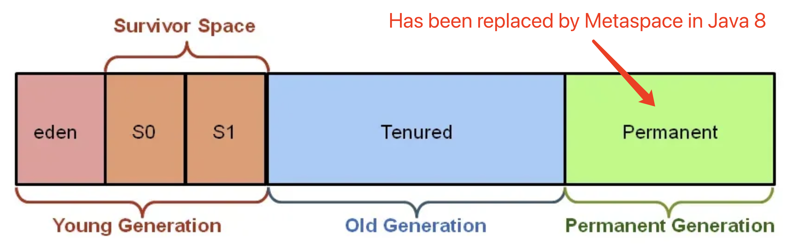

LD refers to Little Dinosaur.
Reference
Little Dinosaur website, The numbers in this article are based on the numbers on this website.
real questions
- What is the current Java version? What are you using? What’s latest?
- The latest LTS version is Java 21, but Java 17 remains widely used. I use Java 17 in production for its stability and features like sealed classes and pattern matching.
- What are Java 17 features (e.g., Sealed Classes)?
- Java 17 introduces sealed classes, enhanced switch expressions, and pattern matching for instanceof. These improve type safety and reduce boilerplate.
Optional
在 Java 中，Optional 是 Java 8 引入的一个容器类，它可以包含一个非空值（Optional.of(value)），也可以表示一个空值（Optional.empty()）。其主要作用是避免 NullPointerException，使代码更具可读性和健壮性。下面详细介绍 Optional 的常见用法：
1. 创建 Optional 对象
Optional.of(T value)：创建一个包含非空值的Optional对象。如果传入的参数为null，会抛出NullPointerException。Optional.ofNullable(T value)：创建一个可能包含空值的Optional对象。如果传入的参数为null，则返回一个空的Optional对象。Optional.empty()：创建一个空的Optional对象。
import java.util.Optional; |
2. 判断 Optional 中是否包含值
isPresent()：判断Optional对象是否包含非空值。如果包含非空值返回true，否则返回false。isEmpty()：Java 11 引入的方法，判断Optional对象是否为空。如果为空返回true，否则返回false。
import java.util.Optional; |
3. 获取 Optional 中的值
get()：如果Optional包含非空值，则返回该值；否则抛出NoSuchElementException。orElse(T other)：如果Optional包含非空值，则返回该值；否则返回指定的默认值other。orElseGet(Supplier<? extends T> other)：如果Optional包含非空值，则返回该值；否则调用Supplier函数式接口的get()方法获取默认值。orElseThrow()：如果Optional包含非空值，则返回该值；否则抛出NoSuchElementException。在 Java 10 及以后版本，还可以使用orElseThrow(Supplier<? extends X> exceptionSupplier)方法自定义异常。
import java.util.Optional; |
4. 对 Optional 中的值进行操作
ifPresent(Consumer<? super T> action)：如果Optional包含非空值，则执行指定的Consumer操作；否则不做任何处理。ifPresentOrElse(Consumer<? super T> action, Runnable emptyAction)：Java 9 引入的方法，如果Optional包含非空值，则执行action；否则执行emptyAction。map(Function<? super T,? extends U> mapper)：如果Optional包含非空值，则对该值应用Function函数式接口的apply()方法，并返回一个包含结果的Optional对象；否则返回一个空的Optional对象。flatMap(Function<? super T, Optional<U>> mapper)：与map方法类似，但Function函数式接口的返回值必须是Optional类型。filter(Predicate<? super T> predicate)：如果Optional包含非空值，并且该值满足指定的Predicate条件，则返回包含该值的Optional对象；否则返回一个空的Optional对象。
import java.util.Optional; |
通过上述示例，你可以了解到 Optional 的常见用法，合理使用 Optional 可以有效避免 NullPointerException，提高代码的健壮性和可读性。
Stream API
lazy evaluation
What is lazy evaluation in Stream?
Stream intermediate operations are lazily executed and only run when a terminal operation is invoked. This improves performance and avoids unnecessary work.
import java.util.Arrays; |
output:Before terminal operation:
After building the stream pipeline but before terminal operation
Starting terminal operation:
Filtering: 1
Filtering: 2
Mapping: 2
4
真题
给 "Pencil", "Pencil", "Note", "Pen", "Book", "Pencil", "Book");
过滤掉长度小于等于3的字符串, 并请按字符串分组并统计出现次数来排序输出（按值降序）为：
"Pencil" - 3 |
解法:
List<String> list2 = Arrays.asList("Pencil", "Pencil", "Note", "Pen", "Book", "Pencil", "Book"); |
中间操作
中间操作会返回一个新的流，允许你进行链式调用。常见的中间操作有 filter、map、flatMap、distinct、sorted 等。
终端操作
终端操作会触发流的处理并产生结果，常见的终端操作有 forEach、collect、reduce、count、findFirst、anyMatch 等。
以下是不同类型操作的示例代码：
代码解释
中间操作：
- filter：用于筛选出满足指定条件的元素。
- map：将流中的每个元素映射为另一个元素。
- flatMap：将嵌套的流扁平化。
- distinct：去除流中的重复元素。
- sorted：对流中的元素进行排序。
终端操作：
- forEach：遍历流中的每个元素。
- collect：将流中的元素收集到一个集合中。
- reduce：对流中的元素进行归约操作，例如求和。
- count：统计流中元素的数量。
- findFirst：查找流中的第一个元素。
- anyMatch：判断流中是否有元素满足指定条件。
通过这些示例，你可以了解到 Stream API 不同类型操作的使用方法和效果。
import java.util.Arrays; |
只有List才能有stream吗
并非只有 List 能使用 stream 方法。在 Java 里，很多集合类以及其他类型都可以使用 stream 方法来创建流，以下为你详细介绍：
1. 实现 Collection 接口的集合类
Collection 接口拓展了 stream() 方法，所以所有实现 Collection 接口的类都能够调用此方法生成流。常见的有：
List：像ArrayList、LinkedList这类。import java.util.ArrayList;
import java.util.List;
public class ListStreamExample {
public static void main(String[] args) {
List<String> list = new ArrayList<>();
list.add("apple");
list.add("banana");
list.add("cherry");
long count = list.stream().filter(s -> s.startsWith("a")).count();
System.out.println("以 'a' 开头的元素数量: " + count);
}
}Set：例如HashSet、TreeSet。import java.util.HashSet;
import java.util.Set;
public class SetStreamExample {
public static void main(String[] args) {
Set<Integer> set = new HashSet<>();
set.add(1);
set.add(2);
set.add(3);
int sum = set.stream().mapToInt(Integer::intValue).sum();
System.out.println("集合元素总和: " + sum);
}
}Queue：像LinkedList（它同时实现了List和Queue接口）、PriorityQueue。import java.util.LinkedList;
import java.util.Queue;
public class QueueStreamExample {
public static void main(String[] args) {
Queue<String> queue = new LinkedList<>();
queue.add("one");
queue.add("two");
queue.add("three");
queue.stream().forEach(System.out::println);
}
}
2. 数组
虽然数组没有直接实现 Collection 接口，不过可以借助 Arrays 工具类的 stream 方法来创建流。import java.util.Arrays;
public class ArrayStreamExample {
public static void main(String[] args) {
int[] array = {1, 2, 3, 4, 5};
int sum = Arrays.stream(array).sum();
System.out.println("数组元素总和: " + sum);
}
}
3. 其他
Map：Map本身没有stream()方法，但可以通过其keySet()、values()或者entrySet()方法得到对应的集合，再创建流。import java.util.HashMap;
import java.util.Map;
public class MapStreamExample {
public static void main(String[] args) {
Map<String, Integer> map = new HashMap<>();
map.put("apple", 1);
map.put("banana", 2);
map.put("cherry", 3);
long count = map.entrySet().stream().filter(entry -> entry.getValue() > 1).count();
System.out.println("值大于 1 的键值对数量: " + count);
}
}Stream类的静态方法：可以直接利用Stream类的静态方法创建流，例如Stream.of()、Stream.iterate()、Stream.generate()等。import java.util.stream.Stream;
public class StaticStreamExample {
public static void main(String[] args) {
Stream<Integer> stream = Stream.of(1, 2, 3, 4, 5);
int sum = stream.mapToInt(Integer::intValue).sum();
System.out.println("流元素总和: " + sum);
}
}
综上所述，在 Java 里有多种方式能够创建流，List 只是其中一种可以创建流的类型。
Future&CompletableFuture
在 Java 里，Future 和 CompletableFuture 都用于处理异步操作，不过 CompletableFuture 是 Java 8 引入的，它在 Future 的基础上做了扩展，功能更强大。下面从多个方面对它们进行对比，并给出示例和表格。
Future
- The
Futureinterface represents the result of an asynchronous computation. It is used in conjunction withExecutorServicewhen you submit aCallabletask. - A
Callableis similar to aRunnable, but it can return a result and throw an exception. - When you submit a
Callableto anExecutorService, it returns aFutureobject, which you can use to check if the computation is done, wait for the computation to complete, and retrieve the result of the computation. Example of using
FuturewithExecutorService:import java.util.concurrent.Callable;
import java.util.concurrent.ExecutionException;
import java.util.concurrent.ExecutorService;
import java.util.concurrent.Executors;
import java.util.concurrent.Future;
public class FutureExample {
public static void main(String[] args) {
ExecutorService executorService = Executors.newFixedThreadPool(5);
// Submits a Callable task
Future<Integer> future = executorService.submit(new Callable<Integer>() {
public Integer call() throws Exception {
// Simulates some computation
Thread.sleep(2000);
return 42;
}
});
try {
// Waits for the task to complete and gets the result
Integer result = future.get();
System.out.println("Result: " + result);
} catch (InterruptedException | ExecutionException e) {
e.printStackTrace();
}
executorService.shutdown();
}
}In the code above:
executorService.submit()is used to submit aCallable<Integer>task. TheCallabletask simulates some computation (in this case, it sleeps for 2 seconds and then returns the value 42).future.get()blocks the calling thread until the computation is completed and returns the result. If the computation throws an exception, it will be wrapped in anExecutionException.InterruptedExceptionis thrown if the waiting thread is interrupted while waiting for the result.
CompletableFuture
Enhanced Functionality:
CompletableFutureis introduced in Java 8. It implementsFutureand provides additional functionality for chaining asynchronous operations, combining multiple futures, and handling exceptions.It allows you to perform actions upon completion, combine multiple futures, and transform results.
import java.util.concurrent.CompletableFuture;
import java.util.concurrent.ExecutionException;
public class CompletableFutureExample {
public static void main(String[] args) throws ExecutionException, InterruptedException {
CompletableFuture<Integer> future = CompletableFuture.supplyAsync(() -> {
// Simulate a long-running task
try {
Thread.sleep(2000);
} catch (InterruptedException e) {
e.printStackTrace();
}
return 42;
});
// Do other work while the future is being computed
System.out.println("Doing other work...");
// Chain another action upon completion
CompletableFuture<String> resultFuture = future.thenApply(result -> "Result: " + result);
// Block until the final result is available
String result = resultFuture.get();
System.out.println(result);
/* result print:
Doing other work...
Result: 42
*/
}
}Explanation:
CompletableFuture.supplyAsync(() -> {... });: Creates aCompletableFuturethat runs the given task asynchronously.future.thenApply(result -> "Result: " + result);: Chains another action to theCompletableFuture.resultFuture.get();: Blocks until the final result is available.
对比分析
1. 基本功能
Future：Future代表一个异步计算的结果。它提供了检查计算是否完成、等待计算完成以及获取计算结果的方法。不过，它缺乏对异步操作的进一步控制和组合能力。CompletableFuture：CompletableFuture不仅具备Future的基本功能，还支持链式调用和组合多个异步操作，能轻松处理复杂的异步任务。
2. 异步任务的创建
Future：通常借助线程池提交任务来创建Future对象。CompletableFuture：提供了多种静态方法来创建，例如runAsync、supplyAsync等。
3. 错误处理
Future：Future本身没有内置的错误处理机制，需要手动捕获异常。CompletableFuture：有专门的exceptionally方法来处理异常，还可以使用handle方法同时处理正常结果和异常。
4. 组合多个异步任务
Future：组合多个Future任务较为复杂，需要手动管理线程和结果。CompletableFuture：提供了丰富的方法来组合多个异步任务，比如thenCompose、thenCombine等。
对比表格
| 对比项 | Future |
CompletableFuture |
|---|---|---|
| 基本功能 | 代表异步计算的结果，提供检查计算是否完成、等待计算完成以及获取结果的方法 | 具备 Future 的基本功能，还支持链式调用和组合多个异步操作 |
| 异步任务创建 | 通常通过线程池提交任务创建 | 提供多种静态方法创建，如 runAsync、supplyAsync |
| 错误处理 | 无内置错误处理机制，需手动捕获异常 | 有 exceptionally 和 handle 方法处理异常 |
| 组合多个异步任务 | 组合复杂，需手动管理线程和结果 | 提供丰富方法组合，如 thenCompose、thenCombine |
| 代码可读性 | 代码复杂，可读性差 | 支持链式调用，代码简洁易读 |
通过上述对比和示例可知，CompletableFuture 在功能和易用性上明显优于 Future，更适合处理复杂的异步任务。
46-Types of Exceptions

Java Exception hierarchy:
throwable
- error
- error is like system error which can NOT be handled by program, like OutOfMemoryError, StackOverflowError etc.
exception.
Exception – compile/checked exception + runtime/unchecked exception. Checked exception can be handled using try catch block, like the SQLException, Thread InterrupttedException; Unchecked exception happens in runtime, like NullPointerException, IndexOutOfBoundException etc.
self defined exception: Just extend the java Exception class and define your own constructor and message
- error
- How to deal with exception
- Java: use Try/Catch/Finally block or use Throws on method level.
- Spring: use @ExceptionHandler @ControllerAdvice on the controller level to catch exception in whole application
43-Abstract class vs. Interface
Difference Between Interface and Abstract Class in Java
In Java, interfaces and abstract classes are both used to define templates or contracts for other classes, but they have distinct purposes and characteristics. Below is a comparison with examples to clarify their differences.
Key Differences
| Feature | Interface | Abstract Class |
|---|---|---|
| Keyword | interface | abstract |
| Inheritance | A class can implement multiple interfaces. | A class can extend only one abstract class. |
| Method | Implementation Methods are abstract by default (except default methods, which can have implementations). |
Can contain both abstract and concrete (regular) methods. |
| Fields | Can only have public static final constants. |
Can have instance variables. |
| Constructors | Not allowed. | Can have constructors. |
| Default Access Level | Methods are implicitly public. |
Methods can have public, protected, or package-private access. |
| Use Case | Defines a contract or capability. | Defines shared characteristics or behavior. |
Example 1: Using an Interface
An interface is used to define a set of behaviors (a contract) that a class must implement.
// Define an interface |
Example 2: Using an Abstract Class
An abstract class is used when you want to share common code among related classes while still requiring subclasses to provide specific implementations.
// Define an abstract class |
When to Use:
- Interface:
- Use an interface to define a set of behaviors or capabilities that a class must adhere to, without concerning how they are implemented.
- Example: The Runnable interface defines the ability to be run in a thread.
- Abstract Class:
- Use an abstract class to represent shared characteristics or behavior while allowing subclasses to override specific parts.
- Example: The HttpServlet abstract class provides a framework for handling HTTP requests while letting you implement methods like doGet() or doPost().
44-New feature of Java 8
Java 8 has several new features. Here are some of them along with examples of how they can be used in a project:
Lambda Expressions
Lambda expressions enable a more concise way to represent code blocks that can be passed to methods or stored in variables.
Example: In an e-commerce project, filtering a list of products by price. Suppose there is a Product class with a price field.import java.util.ArrayList;
import java.util.List;
import java.util.stream.Collectors;
class Product {
private double price;
private String name;
public Product(double price, String name) {
this.price = price;
this.name = name;
}
public double getPrice() {
return price;
}
}
public class Main {
public static void main(String[] args) {
List<Product> products = new ArrayList<>();
products.add(new Product(100, "Product1"));
products.add(new Product(200, "Product2"));
products.add(new Product(150, "Product3"));
// Use Lambda expression to filter products with price greater than 150
List<Product> filteredProducts = products.stream()
.filter(product -> product.getPrice() > 150)
.collect(Collectors.toList());
filteredProducts.forEach(product -> System.out.println(product.getPrice()));
}
}
Method References
Method references provide a more concise way to refer to existing methods.
Example: In a logging project, there is a Logger class with a logMessage method for logging messages.import java.util.Arrays;
import java.util.List;
class Logger {
public static void logMessage(String message) {
System.out.println("Logging: " + message);
}
}
public class Main {
public static void main(String[] args) {
List<String> messages = Arrays.asList("Message1", "Message2", "Message3");
// Use method reference to apply the logging method to each message
messages.forEach(Logger::logMessage);
}
}
Stream API
The Stream API is used for performing functional operations on collections, such as filtering, mapping, and reducing.
Example: In a data analysis project, calculating the total salary of employees. Suppose there is an Employee class with a salary field.import java.util.ArrayList;
import java.util.List;
class Employee {
private double salary;
public Employee(double salary) {
this.salary = salary;
}
public double getSalary() {
return salary;
}
}
public class Main {
public static void main(String[] args) {
List<Employee> employees = new ArrayList<>();
employees.add(new Employee(5000));
employees.add(new Employee(6000));
employees.add(new Employee(7000));
// Use Stream API to calculate the total salary of employees
double totalSalary = employees.stream()
.mapToDouble(Employee::getSalary)
.sum();
System.out.println("Total salary: " + totalSalary);
}
}
Optional Class
The Optional class is used to solve the problem of null pointer exceptions and handle potentially null values more gracefully.
Example: In a user management system, getting a user’s email address. Suppose the User class has a getEmail method that might return null.import java.util.Optional;
class User {
private String email;
public User(String email) {
this.email = email;
}
public String getEmail() {
return email;
}
}
public class Main {
public static void main(String[] args) {
User user = new User("example@example.com");
// Use Optional class to safely get the user's email address
Optional<String> emailOptional = Optional.ofNullable(user.getEmail());
String email = emailOptional.orElse("default@example.com");
System.out.println("Email: " + email);
}
}
67-Implement a singleton
import java.io.Serializable; |
Here is the explanation of this Java code in English:
- Package Import:
import java.io.Serializable;: Imports theSerializableinterface, which is used to mark a class as serializable, meaning that objects of this class can be converted into a byte stream for storage or transmission.- In a
Singletonclass, implementing theSerializableinterface is to ensure that the Singleton pattern remains a singleton during serialization and deserialization. - If there is no
readResolvemethod, a new object will be created during deserialization, which will break the Singleton pattern. Because the deserialization mechanism will create a new object through reflection instead of using the existing singleton instance. - When there is a
readResolvemethod, during deserialization, thereadResolvemethod will be called and it returns the singleton instance (obtained through thegetInstancemethod), thus ensuring that the same singleton object is obtained after serialization and deserialization. - If the serialization - related content is not handled properly, multiple “singleton” objects may appear during deserialization, which violates the original intention of the Singleton pattern design. For example, suppose there is no
readResolvemethod, each deserialization will create a newSingletonobject instead of reusing the existing singleton object.
- In a
- Class Definition:
public class Singleton implements Cloneable, Serializable: Defines a public class namedSingletonthat implements theCloneableinterface and theSerializableinterface. Implementing theCloneableinterface usually indicates that objects of this class can be cloned (although in this example, theclonemethod is overridden to disallow cloning), and implementing theSerializableinterface indicates that objects of this class can be serialized.
- Static Member Variable:
private static volatile Singleton instance;: Defines a private static variableinstanceof typeSingleton. Thevolatilekeyword is used to ensure thread-safe access to the variable in a multi-threaded environment. This prevents certain visibility and reordering issues that can occur in a multi-threaded context, making sure that changes made by one thread are visible to other threads immediately.
- Private Constructor:
private Singleton() {}: Declares a private constructor. This ensures that theSingletonclass cannot be instantiated directly from outside the class. This is a common practice in implementing the Singleton design pattern, as it restricts the creation ofSingletonobjects to within the class itself.
- Static Method to Get Instance:
public static Singleton getInstance() {... }: Defines a public static methodgetInstancewhich is used to obtain the single instance of theSingletonclass.if (instance == null) {... }: Checks if theinstancevariable isnull. If it is, then the code enters the synchronized block.synchronized (Singleton.class) {... }: Uses a synchronized block with theSingleton.classobject as the lock. This ensures that only one thread can execute the code inside the block at a time, preventing multiple threads from creating multiple instances of theSingletonclass.if (instance == null) { instance = new Singleton(); }: Inside the synchronized block, the code checks again ifinstanceisnull(this is known as double-checked locking) before creating a new instance ofSingleton. This is done to avoid unnecessary synchronization overhead. Once the instance is created, subsequent calls togetInstancewill simply return the already created instance.
- Clone Method Override:
@Override protected Object clone() throws CloneNotSupportedException {... }: Overrides theclonemethod from theCloneableinterface. Here, it throws aCloneNotSupportedExceptionwith a message indicating that cloning of theSingletonobject is not allowed. This is done to maintain the Singleton property, as we do not want multiple instances created through cloning.
- Read Resolve Method:
protected Object readResolve() { return getInstance(); }: ThereadResolvemethod is used during deserialization. When an object is deserialized, this method is called. Here, it returns the instance obtained from thegetInstancemethod, ensuring that deserialization does not break the Singleton property. Instead of creating a new instance during deserialization, it returns the existing singleton instance, thus maintaining the Singleton guarantee.
In summary, this code implements the Singleton design pattern in Java, which ensures that only one instance of the Singleton class exists throughout the application. It uses double-checked locking for thread-safe lazy initialization of the instance, prevents cloning, and ensures that deserialization returns the existing singleton instance rather than creating a new one. This is a common and robust way of implementing the Singleton pattern in Java, taking into account thread safety and serialization issues.
68-364-Executor Service and Future and CompletableFuture
Benefits of using Executor Service and Future:
- Resource Management:
ExecutorServicemanages threads efficiently, reducing the overhead of thread creation and destruction. - Asynchronous Execution: Allows tasks to be executed in parallel, improving the performance of applications by leveraging multiple threads.
- Result Handling:
Futureprovides a way to handle the results of asynchronous tasks, including waiting for the result, checking if the task is completed, and handling exceptions.
In summary, ExecutorService simplifies thread management and task execution, while Future provides a mechanism to interact with the results of asynchronous tasks. Together, they are powerful tools for writing concurrent and asynchronous Java programs, helping to improve performance and code readability.
Executor Service
- The
ExecutorServiceis an interface in Java that provides a higher-level abstraction for executing tasks asynchronously compared to using raw threads. It is part of thejava.util.concurrentpackage. - It manages a pool of threads, which can be used to execute
RunnableorCallabletasks. By using anExecutorService, you don’t have to deal with the low-level details of thread creation, management, and destruction. - You can submit tasks to the
ExecutorService, and it will handle scheduling and execution of those tasks using its thread pool. - Some commonly used implementations of
ExecutorServiceincludeThreadPoolExecutorandScheduledThreadPoolExecutor. Example of creating an
ExecutorService:import java.util.concurrent.ExecutorService;
import java.util.concurrent.Executors;
public class ExecutorServiceExample {
public static void main(String[] args) {
// Creates a fixed-size thread pool with 5 threads
ExecutorService executorService = Executors.newFixedThreadPool(5);
// Submits a Runnable task
executorService.execute(() -> {
System.out.println("Task executed by thread: " + Thread.currentThread().getName());
});
// Shuts down the executor service after all tasks are completed
executorService.shutdown();
}
}In the code above:
Executors.newFixedThreadPool(5)creates a fixed-size thread pool with 5 threads.executorService.execute()submits aRunnabletask to the executor service for execution. TheRunnabletask is defined using a lambda expression, which simply prints the name of the thread that executes the task.executorService.shutdown()shuts down the executor service after all submitted tasks have completed.
Future
- The
Futureinterface represents the result of an asynchronous computation. It is used in conjunction withExecutorServicewhen you submit aCallabletask. - A
Callableis similar to aRunnable, but it can return a result and throw an exception. - When you submit a
Callableto anExecutorService, it returns aFutureobject, which you can use to check if the computation is done, wait for the computation to complete, and retrieve the result of the computation. Example of using
FuturewithExecutorService:import java.util.concurrent.Callable;
import java.util.concurrent.ExecutionException;
import java.util.concurrent.ExecutorService;
import java.util.concurrent.Executors;
import java.util.concurrent.Future;
public class FutureExample {
public static void main(String[] args) {
ExecutorService executorService = Executors.newFixedThreadPool(5);
// Submits a Callable task
Future<Integer> future = executorService.submit(new Callable<Integer>() {
public Integer call() throws Exception {
// Simulates some computation
Thread.sleep(2000);
return 42;
}
});
try {
// Waits for the task to complete and gets the result
Integer result = future.get();
System.out.println("Result: " + result);
} catch (InterruptedException | ExecutionException e) {
e.printStackTrace();
}
executorService.shutdown();
}
}In the code above:
executorService.submit()is used to submit aCallable<Integer>task. TheCallabletask simulates some computation (in this case, it sleeps for 2 seconds and then returns the value 42).future.get()blocks the calling thread until the computation is completed and returns the result. If the computation throws an exception, it will be wrapped in anExecutionException.InterruptedExceptionis thrown if the waiting thread is interrupted while waiting for the result.
CompletableFuture
Enhanced Functionality:
CompletableFutureis introduced in Java 8. It implementsFutureand provides additional functionality for chaining asynchronous operations, combining multiple futures, and handling exceptions.It allows you to perform actions upon completion, combine multiple futures, and transform results.
import java.util.concurrent.CompletableFuture;
import java.util.concurrent.ExecutionException;
public class CompletableFutureExample {
public static void main(String[] args) throws ExecutionException, InterruptedException {
CompletableFuture<Integer> future = CompletableFuture.supplyAsync(() -> {
// Simulate a long-running task
try {
Thread.sleep(2000);
} catch (InterruptedException e) {
e.printStackTrace();
}
return 42;
});
// Do other work while the future is being computed
System.out.println("Doing other work...");
// Chain another action upon completion
CompletableFuture<String> resultFuture = future.thenApply(result -> "Result: " + result);
// Block until the final result is available
String result = resultFuture.get();
System.out.println(result);
/* result print:
Doing other work...
Result: 42
*/
}
}Explanation:
CompletableFuture.supplyAsync(() -> {... });: Creates aCompletableFuturethat runs the given task asynchronously.future.thenApply(result -> "Result: " + result);: Chains another action to theCompletableFuture.resultFuture.get();: Blocks until the final result is available.
Key Differences
- Chaining and Composing:
- Future: Does not support chaining or combining multiple asynchronous tasks.
- CompletableFuture: Allows chaining of operations using methods like
thenApply,thenCompose,thenCombine, etc., enabling functional composition of asynchronous tasks.
- Exception Handling:
- Future: Limited to
get()which throws checked exceptions. - CompletableFuture: Provides methods like
exceptionallyandhandlefor better exception handling in asynchronous tasks.
- Future: Limited to
- Completion Control:
- Future: You have to wait for the future to complete using
get(). - CompletableFuture: Allows you to complete the future manually using
complete()orcompleteExceptionally().
- Future: You have to wait for the future to complete using
Best Practices
- Use Future: For simple asynchronous tasks where you only need to wait for a result.
- Use CompletableFuture: For complex asynchronous workflows, combining multiple tasks, and performing operations upon completion of tasks.
- By using
CompletableFuture, you can write more readable and powerful asynchronous code, leveraging the functional programming features of Java 8 and later.
- By using
70-Factory Pattern
- Factory Pattern
- This factory pattern allows you to create objects without exposing the instantiation logic to the client. The client only needs to interact with the
ProductFactoryand provide the product type, and the factory takes care of creating the appropriate product. This promotes loose coupling and makes the code more modular and maintainable.// Product interface
interface Product {
void show();
}
// Concrete Product A
class ConcreteProductA implements Product {
public void show() {
System.out.println("This is ConcreteProductA");
}
}
// Concrete Product B
class ConcreteProductB implements Product {
public void show() {
System.out.println("This is ConcreteProductB");
}
}
// Factory class
class ProductFactory {
public Product createProduct(String productType) {
if (productType.equalsIgnoreCase("A")) {
return new ConcreteProductA();
} else if (productType.equalsIgnoreCase("B")) {
return new ConcreteProductB();
} else {
throw new IllegalArgumentException("Invalid product type: " + productType);
}
}
}
// Main class to demonstrate the factory pattern
public class FactoryPatternExample {
public static void main(String[] args) {
ProductFactory factory = new ProductFactory();
// Create product A
Product productA = factory.createProduct("A");
productA.show();
// Create product B
Product productB = factory.createProduct("B");
productB.show();
try {
// Try to create an invalid product
Product invalidProduct = factory.createProduct("C");
invalidProduct.show();
} catch (IllegalArgumentException e) {
System.out.println(e.getMessage());
}
}
}
- This factory pattern allows you to create objects without exposing the instantiation logic to the client. The client only needs to interact with the
70-Obeserver Pattern
- Observer Pattern
- This code demonstrates the Observer Pattern, which allows a subject to maintain a list of observers and notify them of any state changes. It promotes loose coupling between the subject and the observers, making it easy to add or remove observers without modifying the subject’s code.
import java.util.ArrayList;
import java.util.List;
// Observer interface
interface Observer {
void update(String message);
}
// Subject interface
interface Subject {
void attach(Observer observer);
void detach(Observer observer);
void notifyObservers(String message);
}
// Concrete Subject
class ConcreteSubject implements Subject {
private List<Observer> observers = new ArrayList<>();
public void attach(Observer observer) {
observers.add(observer);
}
public void detach(Observer observer) {
observers.remove(observer);
}
public void notifyObservers(String message) {
for (Observer observer : observers) {
observer.update(message);
}
}
}
// Concrete Observer A
class ConcreteObserverA implements Observer {
public void update(String message) {
System.out.println("ConcreteObserverA received message: " + message);
}
}
// Concrete Observer B
class ConcreteObserverB implements Observer {
public void update(String message) {
System.out.println("ConcreteObserverB received message: " + message);
}
}
// Main class to demonstrate the Observer Pattern
public class ObserverPatternExample {
public static void main(String[] args) {
// Create subject
ConcreteSubject subject = new ConcreteSubject();
// Create observers
Observer observerA = new ConcreteObserverA();
Observer observerB = new ConcreteObserverB();
// Attach observers to the subject
subject.attach(observerA);
subject.attach(observerB);
// Notify observers
subject.notifyObservers("Hello, Observers!");
// Detach one observer
subject.detach(observerB);
// Notify remaining observer
subject.notifyObservers("Goodbye, Observers!");
}
}
- This code demonstrates the Observer Pattern, which allows a subject to maintain a list of observers and notify them of any state changes. It promotes loose coupling between the subject and the observers, making it easy to add or remove observers without modifying the subject’s code.
448-Proxy Pattern
The Proxy Design Pattern is a structural design pattern that provides a surrogate or placeholder for another object to control access to it. It is used to control access to the real object, add additional functionality, or provide a more efficient way of accessing the object. Here’s a detailed explanation:
Structure of Proxy Design Pattern
- Subject: This is an interface that defines the common interface for the RealSubject and Proxy.
- RealSubject: This is the actual object that the proxy represents.
- Proxy: This is the object that controls access to the RealSubject. It has a reference to the RealSubject and implements the Subject interface.
interface Image { |
Explanation:
- Interface
Image:interface Imagedefines thedisplay()method that bothRealImageandProxyImagewill implement.
- RealSubject
RealImage:RealImageimplementsImage.- The
RealImageconstructor loads the image from disk when an instance is created. - The
display()method displays the image.
- Proxy
ProxyImage:ProxyImagealso implementsImage.ProxyImageholds a reference toRealImage.- In the
display()method ofProxyImage, ifrealImageis not instantiated, it creates aRealImageinstance. - Then, it calls the
display()method ofRealImage.
Use Cases
- Remote Proxy: Used to represent an object that exists in a different address space, like a remote object in a distributed system.
- Virtual Proxy: Used to create expensive objects on demand. For example, loading images only when they are needed to be displayed.
- Protection Proxy: Used to control access to the real object, providing authentication or authorization.
Benefits
- Lazy Loading: Objects can be loaded only when they are needed, improving performance.
- Access Control: Provides a way to control access to the real object, adding security or authorization.
- Enhanced Functionality: Proxies can add additional functionality, like logging or caching, without modifying the real object.
Example of Usage
public class ProxyPatternExample { |
Explanation:
- We create a
ProxyImageinstance with the file name “test.jpg”. - The first time
display()is called,RealImageis instantiated and the image is loaded and displayed. - The second time
display()is called, the already instantiatedRealImageis used, avoiding reloading.
135-map vs. flatMap
In functional programming, Map and FlatMap are two commonly used higher-order functions, especially in languages like Java, Scala, Python, and JavaScript. Here’s a detailed explanation of both:
Map
Purpose: The
Mapfunction takes a function and applies it to each element of a collection, transforming each element into a new element. The result is a collection of the same size, where each element has been transformed by the function.import java.util.Arrays;
import java.util.List;
import java.util.stream.Collectors;
public class MapExample {
public static void main(String[] args) {
List<Integer> numbers = Arrays.asList(1, 2, 3, 4, 5);
// Map each integer to its square
List<Integer> squaredNumbers = numbers.stream()
.map(n -> n * n)
.collect(Collectors.toList());
System.out.println(squaredNumbers); // [1, 4, 9, 16, 25]
}
}- Explanation:
- We have a list of integers
numbers. - We use the
stream()method to convert the list into a stream. - The
map()function takes a lambda expressionn -> n * n, which squares each element. - The
collect(Collectors.toList())method collects the transformed elements back into a list.
- We have a list of integers
- Explanation:
FlatMap
Purpose: The
FlatMapfunction takes a function that returns a collection for each element in the original collection. It then flattens all these collections into a single collection. It is used when you have a collection of collections and want to transform them into a single collection.import java.util.Arrays;
import java.util.List;
import java.util.stream.Collectors;
public class FlatMapExample {
public static void main(String[] args) {
List<List<Integer>> numberLists = Arrays.asList(
Arrays.asList(1, 2),
Arrays.asList(3, 4),
Arrays.asList(5, 6)
);
// FlatMap to convert a list of lists into a single list
List<Integer> flattenedNumbers = numberLists.stream()
.flatMap(list -> list.stream())
.collect(Collectors.toList());
System.out.println(flattenedNumbers); // [1, 2, 3, 4, 5, 6]
}
}- Explanation:
- We have a list of lists of integers
numberLists. - We use
stream()to convert the list of lists into a stream. - The
flatMap()function takes a lambda expressionlist -> list.stream(), which converts each inner list into a stream. - The
flatMap()function then flattens all these streams into a single stream. - Finally,
collect(Collectors.toList())collects the elements from the flattened stream into a single list.
- We have a list of lists of integers
- Explanation:
374-Synchronized Method vs Synchronized block
Synchronized Method
public class SynchronizedMethodExample {
private int count = 0;
public synchronized void increment() {
count++;
}
}- Explanation:
- The
synchronizedkeyword is applied directly to the method signature. - When a thread calls
increment(), it acquires the lock on the object instance (this) of the class. - No other thread can execute any other synchronized method of the same object until the first thread completes the execution of the synchronized method.
- It’s a simple way to ensure thread safety but can lead to performance issues if the method contains non-critical code that doesn’t need synchronization.
- The
- Explanation:
Synchronized Block
public class SynchronizedBlockExample {
private int count = 0;
private final Object lock = new Object();
public void increment() {
synchronized (lock) {
count++;
}
}
}- Explanation:
- A synchronized block is used within a method.
- The
synchronized (lock)statement takes an object (in this case,lock) as an argument. This object serves as the lock. - Only one thread can enter the synchronized block that uses the same
lockobject at a time. - This allows for more granular control over what part of the method is synchronized, which can improve performance by limiting the scope of synchronization to only the critical section.
- Explanation:
- Key Differences
- Scope of Synchronization:
- Synchronized Method: The entire method is synchronized, even if not all code within the method requires synchronization.
- Synchronized Block: Only the code within the synchronized block is synchronized, allowing other parts of the method to be executed concurrently by different threads.
- Lock Object:
- Synchronized Method: The lock object is the instance of the class itself (this) for instance methods, or the class object for static methods.
- Synchronized Block: You can specify any object as the lock, giving you flexibility in choosing the granularity of locking.
- Performance:
- Synchronized Method: May lead to unnecessary locking and reduced performance if the method contains code that does not need to be synchronized.
- Synchronized Block: Allows for more efficient locking by only synchronizing the necessary parts of the code.
- Scope of Synchronization:
- Best Practices
- Use Synchronized Method: When the entire method needs to be thread-safe and the method is relatively small.
- Use Synchronized Block: When only a part of the method needs to be synchronized, especially in longer methods where only a small part accesses shared resources.
296-Difference: Synchronized, ThreadLocal, Volatile, AtomicInteger
- Synchronized: it is to make resource thread safe in multi-threading environments, can be used on block of code OR method. If we have Employee object and it contains another address object and updateEmployee() method. If we put synchronized on the method, it will lock the whole employee object. If we use synchronized(address) in the code, it will only lock the address field, will not lock whole employee object, So the synchronized block has better performance.
- ThreadLocal: If a variable is defined as ThreadLocal, then when a thread gets this variable, it will gets its own copy, so when this thread update this variable, it only updates its own copy, the other copies used by other threads will not be affected.
- Volatile: If a variable is volatile, it is kept at a core main memory. All threads will only read and update this main copy. They will not have their own copy. All threas share exactly the same main copy. It guarantees that if one thread updates the value, the other threads will get that updated value because there is only 1 copy.
- AtomicInteger: AtomicInteger/AtomicBoolean/AtomicReference etc: the ‘atomic’ is to make sure the operations on the variable is a single operation and cannot be splitted further. It is typically used as a Global Counting and prevent thread race conditions.
volatile
在Java中，volatile是一个关键字，用于修饰变量，它主要有以下作用和含义：
保证可见性
- 可见性是指当一个线程修改了共享变量的值，其他线程能够立即得知这个修改。在没有
volatile关键字修饰的情况下，线程可能会从自己的本地缓存中读取变量的值，而不是从主内存中获取最新的值，这就可能导致数据不一致的问题。 - 当变量被声明为
volatile时，任何线程对该变量的写操作都会立即刷新到主内存中，而其他线程在读取该变量时，也会强制从主内存中获取最新的值，从而保证了不同线程之间对该变量的可见性。例如：
public class VolatileExample { |
在上述代码中，flag变量被volatile修饰，当一个线程调用setFlag方法修改flag的值为true时，其他线程调用checkFlag方法能够立即获取到flag的最新值。
禁止指令重排序
- 指令重排序是指编译器和处理器为了优化程序性能，可能会对指令进行重新排序，但是这种重排序可能会导致程序的执行结果与预期不符。
volatile关键字可以禁止指令重排序，保证变量的读写操作按照代码中的顺序执行。例如，在单例模式的双重检查锁定（DCL）实现中，如果不使用volatile修饰单例对象，可能会出现问题：
public class Singleton { |
在上述代码中，instance变量被volatile修饰，这可以确保在创建单例对象时，不会因为指令重排序而导致其他线程获取到未完全初始化的对象。
需要注意的是，volatile关键字并不能保证原子性。如果需要保证原子性，通常可以使用java.util.concurrent.atomic包下的原子类，或者使用synchronized关键字来实现。
106-Thread
Here is an explanation of some important thread methods in Java: join, wait, sleep, and yield.
join() Method
Purpose: The
join()method is used to wait for a thread to complete its execution. It is often used when one thread needs to wait for another thread to finish before it can continue its own execution.public class JoinExample {
public static void main(String[] args) throws InterruptedException {
Thread thread1 = new Thread(() -> {
try {
Thread.sleep(2000);
System.out.println("Thread 1 completed");
} catch (InterruptedException e) {
e.printStackTrace();
}
});
thread1.start();
thread1.join();
System.out.println("Main thread continues after thread1 completes");
/* result print:
Thread 1 completed
Main thread continues after thread1 completes
*/
}
}- Explanation:
- We create a new
Thread(thread1) which sleeps for 2 seconds and then prints a message. - We start
thread1withthread1.start(). - We call
thread1.join(), which makes the main thread wait untilthread1completes its execution. - Only after
thread1completes, the main thread prints its message.
- We create a new
- Explanation:
wait() Method
Purpose: The
wait()method is used to make a thread wait until some other thread notifies it. It must be called from a synchronized block or method, and it releases the lock on the object.public class WaitExample {
public static void main(String[] args) {
final Object lock = new Object();
Thread thread1 = new Thread(() -> {
synchronized (lock) {
try {
System.out.println("Thread 1 is waiting");
lock.wait();
System.out.println("Thread 1 resumed");
} catch (InterruptedException e) {
e.printStackTrace();
}
}
});
Thread thread2 = new Thread(() -> {
synchronized (lock) {
System.out.println("Thread 2 notifying");
lock.notify();
}
});
thread1.start();
try {
Thread.sleep(1000);
} catch (InterruptedException e) {
e.printStackTrace();
}
thread2.start();
/* result print:
Thread 1 is waiting
Thread 2 notifying
Thread 1 resumed
*/
}
}- Explanation:
- We create an object
lockwhich serves as a lock for synchronization. thread1enters a synchronized block, callswait(), and waits.thread2enters the same synchronized block, callsnotify(), and wakes upthread1.
- We create an object
- Explanation:
sleep() Method
Purpose: The
sleep()method is used to pause the execution of a thread for a specified amount of time. The thread does not release any locks during this time.public class SleepExample {
public static void main(String[] args) {
Thread thread1 = new Thread(() -> {
try {
System.out.println("Thread 1 sleeping");
Thread.sleep(2000);
System.out.println("Thread 1 awake");
} catch (InterruptedException e) {
e.printStackTrace();
}
});
thread1.start();
/* result print:
Thread 1 sleeping
Thread 1 awake
*/
}
}- Explanation:
- We create a new
Thread(thread1). thread1callsThread.sleep(2000), which pauses the thread for 2 seconds.
- We create a new
- Explanation:
yield() Method
Purpose: The
yield()method is used to suggest to the thread scheduler that the current thread is willing to yield its current use of the processor. The thread scheduler is free to ignore this suggestion.public class YieldExample {
public static void main(String[] args) {
Thread thread1 = new Thread(() -> {
for (int i = 0; i < 5; i++) {
System.out.println("Thread 1: " + i);
Thread.yield();
}
});
Thread thread2 = new Thread(() -> {
for (int i = 0; i < 5; i++) {
System.out.println("Thread 2: " + i);
Thread.yield();
}
});
thread1.start();
thread2.start();
/* result print:
Thread 2: 0
Thread 2: 1
Thread 2: 2
Thread 1: 0
Thread 1: 1
Thread 1: 2
Thread 2: 3
Thread 2: 4
Thread 1: 3
Thread 1: 4
*/
}
}- Explanation:
- We create two threads (
thread1andthread2). - Each thread prints a message and calls
Thread.yield(), suggesting that the scheduler can give the CPU to another thread.
- We create two threads (
- Explanation:
104-How does thread communicate/interact/share data with each other
In Java, threads can communicate, interact, and share data with each other through several mechanisms. Here’s a detailed overview of these methods:
Shared Variables
Using Volatile Variables:
- A
volatilevariable ensures that all reads and writes to the variable are directly to and from main memory, not cached by threads. It is useful for simple flags or status indicators.public class VolatileExample {
private volatile boolean flag = false;
public void setFlag() {
flag = true;
}
public boolean getFlag() {
return flag;
}
}
- A
Explanation:
private volatile boolean flag = false;: Declares avolatileboolean variable.setFlag()sets theflagtotrue.getFlag()retrieves the value offlag.- Changes made by one thread to
flagare immediately visible to other threads.
Synchronization
Using Synchronized Methods and Blocks:
- Synchronization ensures that only one thread can access a synchronized method or block at a time, preventing race conditions.
public class SharedData {
private int count = 0;
public synchronized void increment() {
count++;
}
public synchronized int getCount() {
return count;
}
}
- Synchronization ensures that only one thread can access a synchronized method or block at a time, preventing race conditions.
Explanation:
public synchronized void increment() {... }: Synchronized method ensures thread-safe access tocount.public synchronized int getCount() {... }: Ensures thread-safe access when readingcount.
Wait, Notify, and NotifyAll
Using wait(), notify(), and notifyAll():
- These methods are used in conjunction with synchronized blocks to pause and resume threads.
public class WaitNotifyExample {
private boolean ready = false;
private final Object lock = new Object();
public void waitForReady() throws InterruptedException {
synchronized (lock) {
while (!ready) {
lock.wait();
}
}
}
public void setReady() {
synchronized (lock) {
ready = true;
lock.notifyAll();
}
}
}
- These methods are used in conjunction with synchronized blocks to pause and resume threads.
Explanation:
waitForReady()waits untilreadyistrue, usinglock.wait().setReady()setsreadytotrueand wakes up waiting threads usinglock.notifyAll().
Thread Confinement
Using ThreadLocal:
ThreadLocalallows each thread to have its own copy of a variable.public class ThreadLocalExample {
private static final ThreadLocal<Integer> threadLocal = new ThreadLocal<>();
public static void main(String[] args) {
threadLocal.set(1);
System.out.println(threadLocal.get());
}
}
Explanation:
ThreadLocal<Integer> threadLocal = new ThreadLocal<>();: Creates aThreadLocalvariable.threadLocal.set(1);: Sets the value for the current thread.threadLocal.get();: Retrieves the value for the current thread.
Using Concurrent Data Structures
Using Concurrent Collections:
- Java provides concurrent collections like
ConcurrentHashMap,CopyOnWriteArrayList, etc., which are thread-safe.import java.util.concurrent.ConcurrentHashMap;
public class ConcurrentMapExample {
public static void main(String[] args) {
ConcurrentHashMap<String, Integer> map = new ConcurrentHashMap<>();
map.put("key", 1);
System.out.println(map.get("key"));
}
}
- Java provides concurrent collections like
Explanation:
ConcurrentHashMap<String, Integer> map = new ConcurrentHashMap<>();: Creates a thread-safe map.map.put("key", 1);: Puts an entry in the map.map.get("key");: Retrieves the value from the map.
Using Locks and Condition Variables
Using ReentrantLock and Condition:
ReentrantLockprovides more flexible locking thansynchronized, andConditionallows more control over waiting and signaling.import java.util.concurrent.locks.Condition;
import java.util.concurrent.locks.ReentrantLock;
public class LockConditionExample {
private final ReentrantLock lock = new ReentrantLock();
private final Condition condition = lock.newCondition();
private boolean ready = false;
public void waitForReady() throws InterruptedException {
lock.lock();
try {
while (!ready) {
condition.await();
}
} finally {
lock.unlock();
}
}
public void setReady() {
lock.lock();
try {
ready = true;
condition.signalAll();
} finally {
lock.unlock();
}
}
}
Explanation:
ReentrantLock lock = new ReentrantLock();: Creates a reentrant lock.Condition condition = lock.newCondition();: Creates a condition associated with the lock.condition.await();makes the thread wait.condition.signalAll();wakes up waiting threads.
By using these mechanisms, threads can communicate, interact, and share data safely and efficiently, avoiding race conditions and ensuring thread-safe access to shared resources.
121-373-deadlock
Deadlock is when you have 2 threads, Thread1 is waiting Thread2 to release lock on an object while Thread2 is waiting for Thread1 to release lock on an object. They are waiting on each other.
public class ThreadLock { |
Finding Deadlocks
Thread Dump Analysis:
- You can use tools like
jstack(part of the JDK) to take a thread dump of a running Java application. A thread dump shows the state of all threads, including which locks they hold and which locks they are waiting for. Example of using
jstack:jstack <PID>
Here,
<PID>is the process ID of the Java application.- Analyzing the thread dump:
- Look for threads that are in the
BLOCKEDstate. If two or more threads are waiting on locks held by each other, it indicates a deadlock. - For example, if Thread A is waiting for a lock held by Thread B, and Thread B is waiting for a lock held by Thread A, it’s a deadlock.
- Look for threads that are in the
- You can use tools like
- Java VisualVM:
- Java VisualVM is a monitoring and profiling tool. It can detect deadlocks automatically.
- Steps:
- Start your Java application.
- Open Java VisualVM.
- Locate your application in the list of running Java processes.
- Go to the “Threads” tab.
- Look for deadlock warnings, and examine thread states and locks.
Avoiding Deadlocks
Lock Ordering:
- Always acquire locks in a consistent order across all threads.
Example:
public class DeadlockAvoidance {
private final Object lock1 = new Object();
private final Object lock2 = new Object();
public void method1() {
synchronized (lock1) {
synchronized (lock2) {
// Critical section
}
}
}
public void method2() {
synchronized (lock1) {
synchronized (lock2) {
// Critical section
}
}
}
}Explanation:
- Both
method1()andmethod2()acquirelock1beforelock2. This ensures that no thread holdslock2while waiting forlock1.
- Both
Lock Timeout:
- Use
tryLock()with a timeout instead ofsynchronizedorlock(). Example:
import java.util.concurrent.locks.Lock;
import java.util.concurrent.locks.ReentrantLock;
public class TimeoutLockExample {
private final Lock lock1 = new ReentrantLock();
private final Lock lock2 = new ReentrantLock();
public void method1() {
boolean lock1Acquired = false;
boolean lock2Acquired = false;
try {
lock1Acquired = lock1.tryLock(100, TimeUnit.MILLISECONDS);
lock2Acquired = lock2.tryLock(100, TimeUnit.MILLISECONDS);
if (lock1Acquired && lock2Acquired) {
// Critical section
}
} catch (InterruptedException e) {
// Handle interruption
} finally {
if (lock1Acquired) lock1.unlock();
if (lock2Acquired) lock2.unlock();
}
}
}Explanation:
tryLock(100, TimeUnit.MILLISECONDS)tries to acquire the lock with a timeout of 100 milliseconds.- If the lock cannot be acquired within the timeout, the thread can take corrective action.
- Use
- Avoid Nested Locks:
- Minimize the use of nested locks. If possible, design your code to use a single lock or fewer nested locks.
Best Practices
- Resource Allocation Graph:
- Use a resource allocation graph to analyze potential deadlocks before implementation.
- Ensure that the graph does not contain cycles, which indicate potential deadlocks.
- Deadlock Detection Algorithms:
- Implement deadlock detection algorithms like the Banker’s algorithm in more complex systems, especially in operating systems or resource management systems.
118-Relationship between equals() and hashcode()
In Java, the equals() method is used to compare the equality of two objects. Here’s a detailed explanation:
Default Implementation
- The
equals()method is defined in theObjectclass, which is the superclass of all classes in Java. The default implementation of
equals()uses the==operator, which checks if two references point to the same object (i.e., reference equality).public class EqualsExample {
public static void main(String[] args) {
Object obj1 = new Object();
Object obj2 = new Object();
Object obj3 = obj1;
System.out.println(obj1.equals(obj2)); // false
System.out.println(obj1.equals(obj3)); // true
}
}- Explanation:
obj1.equals(obj2)returnsfalsebecauseobj1andobj2are different object instances.obj1.equals(obj3)returnstruebecauseobj3refers to the same object asobj1.
- Explanation:
Overriding equals()
You should override the
equals()method in your custom classes if you want to compare objects based on their state (content equality) rather than reference equality.class Person {
private String name;
private int age;
public Person(String name, int age) {
this.name = name;
this.age = age;
}
public boolean equals(Object o) {
if (this == o) return true;
if (o == null || getClass()!= o.getClass()) return false;
Person person = (Person) o;
return age == person.age && name.equals(person.name);
}
}- Explanation:
if (this == o) return true;checks if the objects are the same reference.if (o == null || getClass()!= o.getClass()) return false;checks ifoisnullor not of the same class.Person person = (Person) o;castsotoPerson.return age == person.age && name.equals(person.name);compares theageandnamefields.
- Explanation:
hashCode() and equals()
- If you override
equals(), you should also overridehashCode(). The
hashCode()method is used in hash-based collections likeHashMapandHashSet.class Person {
private String name;
private int age;
public Person(String name, int age) {
this.name = name;
this.age = age;
}
public boolean equals(Object o) {
if (this == o) return true;
if (o == null || getClass()!= o.getClass()) return false;
Person person = (Person) o;
return age == person.age && name.equals(person.name);
}
public int hashCode() {
int result = name.hashCode();
result = 31 * result + age;
return result;
}
}- Explanation:
hashCode()is overridden to generate a hash code based onnameandage.- The formula
int result = name.hashCode(); result = 31 * result + age;is a common way to combine hash codes.
- Explanation:
Rules for equals()
- Reflexive:
x.equals(x)should always betrue. - Symmetric: If
x.equals(y)istrue, theny.equals(x)should also betrue. - Transitive: If
x.equals(y)istrueandy.equals(z)istrue, thenx.equals(z)should betrue. - Consistent: Repeated calls to
equals()should return the same result, if the objects have not changed. - Null Check:
x.equals(null)should always befalse.
Using equals()
public class EqualsUsage { |
- Explanation:
p1.equals(p2)returnstruebecausep1andp2have the samenameandage(because we overrode itsequalsmethod above).p1.equals(p3)returnsfalsebecausep1andp3have differentnameandage.
132-What is fail-fast and fail-safe?
Here’s an explanation of fail-fast and fail-safe mechanisms in Java, particularly in the context of collections:
Fail-Fast
- Concept:
- Fail-fast iterators in Java immediately throw a
ConcurrentModificationExceptionif the collection is modified structurally during iteration. Structural modifications include adding or removing elements. - It is designed to fail as soon as possible to avoid unpredictable behavior due to concurrent modifications.
- Fail-fast iterators in Java immediately throw a
Example of Fail-Fast Iterator:
import java.util.ArrayList;
import java.util.Iterator;
import java.util.List;
import java.util.ConcurrentModificationException;
public class test {
public static void main(String[] args) {
List<String> list = new ArrayList<>();
list.add("A");
list.add("B");
list.add("C");
try {
Iterator<String> iterator = list.iterator();
while (iterator.hasNext()) {
String element = iterator.next();
if (element.equals("A")) {
// Structural modification
list.remove(element);
/*
the correct way!! When we want to remove an element, we use iterator.remove() instead of list.remove(element). This is the correct way to remove elements while iterating through the list, as the iterator's remove() method is designed to handle the modification safely, updating the internal state of the iterator and avoiding ConcurrentModificationException.
*/
}
}
} catch (ConcurrentModificationException e) {
System.out.println("ConcurrentModificationException caught: " + e.getMessage());
}
/* result print:
ConcurrentModificationException caught: null
*/
}
}- Explanation:
- We create an
ArrayListand add elements “A”, “B”, and “C”. - We obtain an iterator using
list.iterator(). - While iterating, we attempt to remove an element using
list.remove(element). - This results in a
ConcurrentModificationExceptionbecause the collection is modified during iteration.
- We create an
- Explanation:
Fail-Safe
- Concept:
- Fail-safe iterators in Java do not throw
ConcurrentModificationExceptionwhen the collection is modified structurally during iteration. - They operate on a copy of the collection, not the original collection, so changes to the original collection do not affect the iteration.
- Fail-safe iterators in Java do not throw
Example of Fail-Safe Iterator:
import java.util.concurrent.CopyOnWriteArrayList;
public class FailSafeExample {
public static void main(String[] args) {
CopyOnWriteArrayList<String> list = new CopyOnWriteArrayList<>();
list.add("A");
list.add("B");
list.add("C");
Iterator<String> iterator = list.iterator();
while (iterator.hasNext()) {
String element = iterator.next();
if (element.equals("B")) {
// Structural modification
list.remove(element);
}
}
}
}- Explanation:
- We create a
CopyOnWriteArrayList. - We add elements “A”, “B”, and “C”.
- We obtain an iterator using
list.iterator(). - We attempt to remove an element using
list.remove(element)during iteration. - No
ConcurrentModificationExceptionis thrown becauseCopyOnWriteArrayListuses a fail-safe iterator that works on a copy of the list.
- We create a
- Explanation:
Key Differences
- Concurrency Handling:
- Fail-Fast: Detects concurrent modifications and fails immediately, useful in single-threaded or low-concurrency environments.
- Fail-Safe: Does not fail when the collection is modified, suitable for concurrent environments.
- Performance:
- Fail-Fast: Generally more efficient in single-threaded environments as it does not need to create copies of the collection.
- Fail-Safe: Slower in single-threaded environments due to copying the collection, but more suitable for concurrent environments.
Best Practices
- Use Fail-Fast: When you are in a single-threaded or low-concurrency environment and want to detect concurrent modifications early.
- Use Fail-Safe: When you expect concurrent modifications and want to avoid
ConcurrentModificationException, especially in highly concurrent environments. - Understanding the difference between fail-fast and fail-safe mechanisms helps you choose the right collection and iterator for your concurrency needs, ensuring robustness and predictability in your code.
163-what is SOLID principle
The SOLID principles are a set of five design principles in object - oriented programming and software design. These principles help in creating more maintainable, flexible, and understandable software systems. Here’s a detailed look at each of them:
- Single Responsibility Principle (SRP)**
- Definition: A class should have only one reason to change. In other words, a class should have only one job or responsibility.
- Example: Consider a class that is responsible for calculating the area of different geometric shapes (like circles, rectangles, etc.) and also responsible for saving the calculated results to a database. This violates the SRP. A better design would be to have one class for calculating the areas and another class for handling the database operations.
- Benefits: It makes the classes more focused and easier to understand and maintain. When a change is required related to a particular responsibility (say, a change in the area - calculation formula), it’s clear which class needs to be modified and other classes are not affected.
- Open - Closed Principle (OCP)**
- Definition: Software entities (classes, modules, functions, etc.) should be open for extension but closed for modification.
- Example: Let’s say you have a drawing application that can draw different shapes. Initially, it can draw circles and rectangles. If you want to add a new shape like a triangle, you should be able to do it without modifying the existing drawing code for circles and rectangles. This can be achieved through inheritance or interfaces. For instance, you can have an abstract
Shapeclass with adraw()method, and concrete classes forCircle,Rectangle, andTrianglethat implement thedraw()method. - Benefits: It allows for easy addition of new functionality without the risk of breaking the existing code that has already been tested and is working. This leads to more stable and maintainable software over time.
- Liskov Substitution Principle (LSP)**
- Definition: Subtypes must be substitutable for their base types. In other words, if you have a program that is using a base class, you should be able to substitute a derived class in its place without changing the correctness of the program.
- Example: Consider a base class
Vehiclewith a methodstartEngine(). A subclassCarinherits fromVehicle. If theCarclass redefines thestartEngine()method in such a way that it violates the expected behavior (for example, thestartEngine()method in theCarclass throws an exception every time it’s called, while in theVehicleclass it starts the engine successfully most of the time), then it violates the LSP. - Benefits: It ensures that the inheritance hierarchy is used in a way that is consistent with the expected behavior. This helps in building more reliable and understandable object - oriented hierarchies.
- Interface Segregation Principle (ISP)**
- Definition: Clients should not be forced to depend on interfaces they do not use. Instead of having a large, monolithic interface, it’s better to have smaller, more specific interfaces.
- Example: Suppose you have an interface
Workerthat has methods likework(),takeBreak(),attendMeeting(), anddoPaperwork(). Now, consider a classManualLaborerthat only needs to implement thework()method and doesn’t need to deal withdoPaperwork()etc. Having a singleWorkerinterface forces theManualLaborerclass to implement methods it doesn’t need. A better approach would be to split theWorkerinterface into smaller interfaces likePhysicalWorker(withwork()method) andOfficeWorker(withdoPaperwork(),attendMeeting()etc.) - Benefits: It reduces the coupling between different parts of the system. Classes only need to implement the interfaces that are relevant to them, which makes the code more modular and easier to understand and maintain.
- Dependency Inversion Principle (DIP)**
- Definition:
High-levelmodules should not depend onlow-levelmodules. Both should depend on abstractions. Abstractions should not depend on details. Details should depend on abstractions. - Example: Consider a
high-levelmodule like aUserControllerin a web application that depends on alow-levelmodule like aUserRepositorywhich is responsible for database operations. Instead of theUserControllerdirectly depending on theUserRepository, they both can depend on an abstraction like anIUserRepositoryinterface. TheUserRepositoryclass implements this interface, and theUserControlleruses the methods defined in the interface. This way, if you want to change the way user data is stored (say, from a SQL database to a NoSQL database), you only need to change the implementation of theIUserRepositoryinterface, and theUserControllerremains unaffected. - Benefits: It makes the code more flexible and easier to test. By depending on abstractions, different implementations can be swapped in and out without major changes to the
high-levelmodules.
- Definition:
What’s Garbage collection types and What’s new about GC in java 8
Reference: https://zhuanlan.zhihu.com/p/25539690
What are Java Generations in memory? (Young, Old, etc.)
JVM heap has Young Generation (Eden + Survivor), Old Generation, and Metaspace. Young Gen collects short-lived objects, Old Gen holds long-lived ones.

- What is PermGen? What replaced it and why?
- PermGen was a memory pool for class metadata, fixed in size. It was replaced by Metaspace in Java 8 for dynamic growth and fewer memory issues.
- What is Metaspace? How is it better?
- Metaspace stores class metadata in native memory, growing automatically as needed. It avoids OutOfMemory errors common in PermGen.
- important GC:
- ZGC
- G1GC (java 17 default GC)
- What is ZGC in Java 11? What are its benefits?
- ZGC is a scalable, low-latency garbage collector with sub-10ms pause times. It supports large heaps (up to TBs) and does most work concurrently.
- Java allows you to choose different GC algorithms based on your JVM version. Common GC options include -XX:+UseSerialGC, -XX:+UseParallelGC, -XX:+UseConcMarkSweepGC, and -XX:+UseG1GC.
Metaspace vs. Permanent Generation
| Comparison Aspect | Permanent Generation | Metaspace |
|---|---|---|
| Definition | It was a space in the Java Virtual Machine (JVM) heap used to store class metadata, such as class definitions, method byte - code, and constant pool information. | It is a native memory area in the JVM that serves the same purpose as the Permanent Generation, storing class metadata. |
| Memory Management | The size of the Permanent Generation was fixed, and it was part of the heap. If the space was exhausted, a java.lang.OutOfMemoryError: PermGen space error would occur. |
Metaspace uses native memory, and its size can be adjusted dynamically. By default, it can grow as needed, reducing the likelihood of out - of - memory errors due to insufficient metadata space. |
| Configuration | Its size was configured using parameters like -XX:PermSize and -XX:MaxPermSize. |
You can configure Metaspace using parameters such as -XX:MetaspaceSize (the initial size) and -XX:MaxMetaspaceSize (the maximum size). |
| Introduced in | Present in Java 7 and earlier versions. | Introduced in Java 8 to replace the Permanent Generation. |
ZGC vs. G1GC
| Comparison Aspect | ZGC | G1GC |
|---|---|---|
| Goal | Designed to achieve extremely low pause times (sub - millisecond pauses) even for very large heaps (multi - terabyte heaps). | Aims to balance between throughput and pause times, suitable for medium - to large - sized heaps. |
| Heap Layout | Uses a region - based and page - based heap layout. It divides the heap into small, fixed - size regions. | Also uses a region - based heap layout. It divides the heap into multiple regions of equal size. |
| Pause Time | Offers very short and predictable pause times, regardless of the heap size. Pauses are mostly in the sub - millisecond range. | Can have longer pause times compared to ZGC, especially for very large heaps. However, it can control pause times to some extent using the -XX:MaxGCPauseMillis parameter. |
| Throughput | Generally has lower throughput compared to G1GC, especially for smaller heaps. This is because it spends more time on concurrent operations to achieve low pause times. | Can provide relatively high throughput, especially when configured correctly for the application’s workload. |
| Application Scenarios | Ideal for applications with large heaps and strict low - latency requirements, such as financial trading systems and real - time analytics platforms. | Suitable for a wide range of applications, especially those that need a balance between throughput and pause times, like enterprise - level Java applications. |
| Introduced in | Introduced in Java 11 as an experimental feature and became production - ready in later versions. | Introduced in Java 7 as a replacement for the Concurrent Mark Sweep (CMS) collector. |
363-Callable vs Runnable
In Java, both Runnable and Callable are used to represent tasks that can be executed concurrently, usually in the context of multi - threading, but they have several differences:
- Return Value
- Runnable:
- A
Runnableinterface does not have a return value. Therunmethod of theRunnableinterface has avoidreturn type. Its purpose is mainly to encapsulate a block of code that needs to be executed, such as a task that performs a simple operation like printing a message or updating a counter. - For example, consider the following
Runnableimplementation:class MyRunnable implements Runnable {
public void run() {
System.out.println("This is a Runnable task.");
}
}
- A
- Runnable:
- Callable:
- A
Callableinterface is designed to return a result. Thecallmethod of theCallableinterface has a generic return type (<V>). The actual type of the return value is specified when theCallableis implemented. - For example, here is a simple
Callableimplementation that returns an integer:import java.util.concurrent.Callable;
class MyCallable implements Callable<Integer> {
public Integer call() throws Exception {
return 42;
}
}
- A
- Return Value
- Exception Handling
- Runnable:
- The
runmethod of theRunnableinterface does not throw checked exceptions. Any checked exceptions that occur within therunmethod must be caught and handled inside therunmethod. If an unchecked exception (such as aRuntimeException) is thrown, it will cause the thread executing theRunnableto terminate abnormally. - For example, if you try to access a file that doesn’t exist inside the
runmethod and you don’t handle theFileNotFoundException(a checked exception), it will result in a compilation error.
- The
- Callable:
- The
callmethod of theCallableinterface can throw checked exceptions. This allows for more flexible error - handling mechanisms. The exceptions thrown from thecallmethod can be propagated to the calling code and handled appropriately. - For example, if the
callmethod is performing a network operation and aSocketException(a checked exception) occurs, it can be thrown and caught in the code that submitted theCallabletask.
- The
- Runnable:
- Exception Handling
Usage with Executor Framework
Runnable:
Runnableis often used with theExecutorService‘sexecutemethod. When you use theexecutemethod to submit aRunnabletask, theExecutorServicewill execute therunmethod of theRunnablein a separate thread (or reuse an existing thread from a thread pool).- For example:
import java.util.concurrent.ExecutorService;
import java.util.concurrent.Executors;
public class RunnableExample {
public static void main(String[] args) {
ExecutorService executor = Executors.newSingleThreadExecutor();
Runnable task = new MyRunnable();
executor.execute(task);
executor.shutdown();
}
}
Callable:
Callableis used with theExecutorService‘ssubmitmethod. When you submit aCallabletask using thesubmitmethod, theExecutorServicereturns aFutureobject. TheFutureobject can be used to retrieve the result of theCallabletask (using thegetmethod) and to manage the state of the task (such as checking if the task is done, canceling the task, etc.).- For example:
import java.util.concurrent.ExecutorService;
import java.util.concurrent.Executors;
import java.util.concurrent.Future;
public class CallableExample {
public static void main(String[] args) throws Exception {
ExecutorService executor = Executors.newSingleThreadExecutor();
Callable<Integer> task = new MyCallable();
Future<Integer> future = executor.submit(task);
System.out.println("The result is: " + future.get());
executor.shutdown();
}
}
375-Difference between Iterator and Enumeration
- Both use to loop java collections.
- Iterator: can remove elements when iterator.
import java.util.ArrayList;
import java.util.Iterator;
public class IteratorRemoveExample {
public static void main(String[] args) {
ArrayList<Integer> list = new ArrayList<>();
list.add(1);
list.add(2);
list.add(3);
Iterator<Integer> iterator = list.iterator();
while (iterator.hasNext()) {
int element = iterator.next();
if (element % 2 == 0) {
iterator.remove();
}
}
System.out.println(list);
}
}
- Enumeration: cannot remove elements.
```java
import java.util.Enumeration;
import java.util.Vector;
public class EnumerationExample {
public static void main(String[] args) {
Vector<String> vector = new Vector<>();
vector.add("Apple");
vector.add("Banana");
Enumeration<String> enumeration = vector.elements();
while (enumeration.hasMoreElements()) {
System.out.println(enumeration.nextElement());
}
}
}
52-131-When implements Serializable, what if you don’t define the serialVersionUID? What if you remove it?
What is serialVersionUID?
serialVersionUIDis a unique identifier for a serializable class. It is used during deserialization to ensure that the sender and receiver of a serialized object have compatible versions of that class. It is stored as alongvalue in the serialized object.
When you don’t define serialVersionUID
Behavior:
- If you do not explicitly define a
serialVersionUIDin your serializable class, the Java runtime will automatically generate one for you at runtime based on various aspects of the class, such as the fields, methods, and other characteristics of the class. - This auto-generated
serialVersionUIDis computed using a complex algorithm that takes into account the class name, the interfaces it implements, and other factors.
- If you do not explicitly define a
Implications:
- Compatibility issues: Any change in the class structure (e.g., adding or removing fields, changing the type of a field, or modifying methods) will cause the runtime to generate a different
serialVersionUID. This means that if you serialize an object with one version of the class and then try to deserialize it with a modified version of the class, the deserialization will fail with anInvalidClassException. Example: Consider the following serializable class:
import java.io.Serializable;
class MyClass implements Serializable {
private int value;
// Constructor, getters, and setters
public MyClass(int value) {
this.value = value;
}
}If you serialize an object of
MyClassin one version of your application, and then you modify theMyClassby adding a new field, like this:import java.io.Serializable;
class MyClass implements Serializable {
private int value;
private String name;
// Constructor, getters, and setters
public MyClass(int value, String name) {
this.value = value;
this.name = name;
}
}Then, when you try to deserialize the previously serialized object, you will get an
InvalidClassExceptionbecause the auto-generatedserialVersionUIDhas changed.
- Compatibility issues: Any change in the class structure (e.g., adding or removing fields, changing the type of a field, or modifying methods) will cause the runtime to generate a different
When you remove serialVersionUID
- Behavior:
- If you initially define a
serialVersionUIDand then remove it from your class, the Java runtime will again generate a new one based on the current state of the class.
- If you initially define a
Implications:
- Compatibility issues: Similar to not defining it initially, removing the
serialVersionUIDcan lead to deserialization failures. If you have serialized objects using the old version of the class with a definedserialVersionUIDand then remove it, the deserialization process will try to use the auto-generatedserialVersionUID, which is likely to be different from the original one, resulting in anInvalidClassException. Example: Consider this class with a defined
serialVersionUID:import java.io.Serializable;
class MyClass implements Serializable {
private static final long serialVersionUID = 123456789L;
private int value;
// Constructor, getters, and setters
public MyClass(int value) {
this.value = value;
}
}If you serialize objects with this version of
MyClass, and then you remove theserialVersionUIDfrom the class like this:import java.io.Serializable;
class MyClass implements Serializable {
private int value;
// Constructor, getters, and setters
public MyClass(int value) {
this.value = value;
}
}When you try to deserialize the previously serialized objects, you will face
InvalidClassExceptionas the deserialization process will use the new auto-generatedserialVersionUIDwhich will not match the old one.
- Compatibility issues: Similar to not defining it initially, removing the
Best Practices
Explicitly define
serialVersionUID:- It is generally recommended to explicitly define
serialVersionUIDin your serializable classes. This way, you have more control over versioning. You can decide when a change in the class should break compatibility and when it should not. Example:
import java.io.Serializable;
class MyClass implements Serializable {
private static final long serialVersionUID = 123456789L;
private int value;
// Constructor, getters, and setters
public MyClass(int value) {
this.value = value;
}
}If you later modify the class by adding a new field but decide that it should still be compatible with the previously serialized objects, you can keep the
serialVersionUIDthe same. However, if you decide that the changes are significant enough to break compatibility, you can change theserialVersionUID.
- It is generally recommended to explicitly define
Serialization and Deserialization Example
Here is a simple example of serializing and deserializing an object:
import java.io.FileOutputStream;
import java.io.ObjectOutputStream;
import java.io.FileInputStream;
import java.io.ObjectInputStream;
import java.io.Serializable;
class MyClass implements Serializable {
private static final long serialVersionUID = 123456789L;
private int value;
public MyClass(int value) {
this.value = value;
}
public int getValue() {
return value;
}
}
public class SerializationExample {
public static void main(String[] args) {
MyClass obj = new MyClass(42);
try {
// Serialization
FileOutputStream fileOut = new FileOutputStream("object.ser");
ObjectOutputStream out = new ObjectOutputStream(fileOut);
out.writeObject(obj);
out.close();
fileOut.close();
// Deserialization
FileInputStream fileIn = new FileInputStream("object.ser");
ObjectInputStream in = new ObjectInputStream(fileIn);
MyClass deserializedObj = (MyClass) in.readObject();
in.close();
fileIn.close();
System.out.println(deserializedObj.getValue());
} catch (Exception e) {
e.printStackTrace();
}
}
}In this example, the
MyClassobject is serialized to a file and then deserialized. If you change theMyClassand want to maintain compatibility, you should keep theserialVersionUIDconstant. If you want to break compatibility, change theserialVersionUID.
372-What is externalization and its difference with serialization
Serialization
- Definition: Serialization is the process of converting an object’s state into a byte stream so that it can be persisted (saved to a file, sent over a network, etc.) and later reconstructed (deserialized) to an object with the same state. In Java, the
java.io.Serializableinterface is used to mark a class as serializable. When an object of a serializable class is serialized, the JVM takes care of writing the object’s state to a stream. Example: Consider a simple
Personclass.import java.io.Serializable;
class Person implements Serializable {
private String name;
private int age;
// Constructor, getters, and setters
public Person(String name, int age) {
this.name = name;
this.age = age;
}
}How it works: When you want to serialize an object of the
Personclass, you can useObjectOutputStream. For example:import java.io.FileOutputStream;
import java.io.ObjectOutputStream;
public class SerializationExample {
public static void main(String[] args) {
Person person = new Person("John", 30);
try {
FileOutputStream fileOut = new FileOutputStream("person.ser");
ObjectOutputStream out = new ObjectOutputStream(fileOut);
out.writeObject(person);
out.close();
fileOut.close();
} catch (Exception e) {
e.printStackTrace();
}
}
}Limitations: The serialization process is automatic and uses the default behavior provided by the JVM. This can lead to inefficiencies and security risks. For example, sensitive data might be serialized and transferred without proper handling. Also, if the class structure changes (e.g., a new field is added), deserialization of the previously serialized objects might cause issues.
- Definition: Serialization is the process of converting an object’s state into a byte stream so that it can be persisted (saved to a file, sent over a network, etc.) and later reconstructed (deserialized) to an object with the same state. In Java, the
Externalization
- Definition: Externalization is a more controlled way of handling object persistence. A class that wants to use externalization must implement the
java.io.Externalizableinterface. This interface has two methods:writeExternalandreadExternal. The programmer is responsible for explicitly writing and reading the object’s state to and from anObjectOutputandObjectInputstream. Example: Let’s modify the
Personclass to use externalization.import java.io.Externalizable;
import java.io.IOException;
import java.io.ObjectInput;
import java.io.ObjectOutput;
class Person implements Externalizable {
private String name;
private int age;
public Person() {
// Required for externalization
}
public Person(String name, int age) {
this.name = name;
this.age = age;
}
public void writeExternal(ObjectOutput out) throws IOException {
out.writeUTF(name);
out.writeInt(age);
}
public void readExternal(ObjectInput in) throws IOException, ClassNotFoundException {
name = in.readUTF();
age = in.readInt();
}
}How it works: When you want to externalize an object of the
Personclass, you can useObjectOutputStreamandObjectInputStreamsimilar to serialization, but the object’s state is written and read using the custom methodswriteExternalandreadExternal. For example:import java.io.FileOutputStream;
import java.io.FileInputStream;
import java.io.ObjectOutputStream;
import java.io.ObjectInputStream;
public class ExternalizationExample {
public static void main(String[] args) {
Person person = new Person("Alice", 25);
try {
// Writing the object
FileOutputStream fileOut = new FileOutputStream("person.external");
ObjectOutputStream out = new ObjectOutputStream(fileOut);
out.writeObject(person);
out.close();
fileOut.close();
// Reading the object
FileInputStream fileIn = new FileInputStream("person.external");
ObjectInputStream in = new ObjectInputStream(fileIn);
Person restoredPerson = (Person) in.readObject();
in.close();
fileIn.close();
System.out.println(restoredPerson.getName() + " " + restoredPerson.getAge());
} catch (Exception e) {
e.printStackTrace();
}
}
}
- Definition: Externalization is a more controlled way of handling object persistence. A class that wants to use externalization must implement the
Differences
- Control:
- Serialization: The process is mostly automatic. The JVM takes care of writing the object’s non - transient fields to the stream. The programmer has limited control over what is serialized.
- Externalization: The programmer has full control. You decide exactly what data to write and read, and in what format. This allows for more efficient and customized persistence.
- Constructor Requirement:
- Serialization: The default constructor is not required. The JVM can reconstruct the object using the serialized data.
- Externalization: A public no - argument constructor is required. This constructor is used during the deserialization process (reading the object’s state).
- Performance and Flexibility:
- Serialization: It’s a convenient option when you don’t need a high level of control. But it might serialize more data than necessary and can be less efficient in terms of space and time.
- Externalization: It’s more flexible and can lead to better performance if implemented correctly. You can choose to serialize only the essential data and in a more optimized way.
- Control:
75-Different types of “method reference”
In Java 8, there are four types of method references:
Static Method Reference
- Explanation: A static method reference refers to a static method of a class. The syntax is
ClassName::staticMethodName. The method reference can be used as a replacement for a lambda expression that calls a static method. Example: Consider a utility class
MathUtilswith a static methodaddthat takes two integers and returns their sum.class MathUtils {
public static int add(int a, int b) {
return a + b;
}
}You can use a static method reference with the
BinaryOperatorinterface. TheBinaryOperatorinterface represents an operation that takes two operands of the same type and returns a result of that type.import java.util.function.BinaryOperator;
public class StaticMethodReferenceExample {
public static void main(String[] args) {
BinaryOperator<Integer> adder = MathUtils::add;
int result = adder.apply(3, 5);
System.out.println(result);
}
}Here,
MathUtils::addis a static method reference that is assigned to theaddervariable of typeBinaryOperator<Integer>. Theapplymethod ofadderthen calls theaddmethod of theMathUtilsclass.
Instance Method Reference of a Particular Object
- Explanation: This type of method reference refers to an instance method of a particular object. The syntax is
objectReference::instanceMethodName. It’s used when you have an existing object and want to refer to one of its methods. Example: Consider a
Stringobject and itslengthmethod.import java.util.function.Function;
public class InstanceMethodReferenceExample {
public static void main(String[] args) {
String str = "Hello";
Function<String, Integer> stringLengthFunction = str::length;
int length = stringLengthFunction.apply(str);
System.out.println(length);
}
}Here,
str::lengthis an instance method reference of thestrobject. TheFunction<String, Integer>interface’sapplymethod calls thelengthmethod of thestrobject.
Instance Method Reference to an Instance Method of an Arbitrary Object of a Particular Type
- Explanation: The syntax is
ClassName::instanceMethodName. This is used when the method being referred to is an instance method, and the actual object on which the method will be called will be determined later. The method reference provides the method signature, and the object is provided when the function is actually executed. Example: Consider the
compareTomethod of theStringclass.import java.util.Arrays;
import java.util.Comparator;
public class ArbitraryObjectMethodReferenceExample {
public static void main(String[] args) {
String[] strings = {"apple", "banana", "cherry"};
Arrays.sort(strings, String::compareTo);
System.out.println(Arrays.toString(strings));
}
}Here,
String::compareTois an instance method reference to thecompareTomethod of theStringclass. TheArrays.sortmethod uses this reference to compare the strings and sort them.
Constructor Reference
- Explanation: A constructor reference refers to a constructor of a class. The syntax is
ClassName::new. It’s used to create new objects of a particular class. Constructor references are useful when you want to use a constructor as a method reference, for example, in factory methods or when populating collections with new objects. Example: Consider a simple
Personclass with a constructor that takes aStringname.class Person {
private String name;
public Person(String name) {
this.name = name;
}
public String getName() {
return name;
}
}You can use a constructor reference with a
Supplierinterface (which represents a function that supplies a result).import java.util.function.Supplier;
public class ConstructorReferenceExample {
public static void main(String[] args) {
Supplier<Person> personSupplier = Person::new;
Person person = personSupplier.get();
person = personSupplier.get("John");
System.out.println(person.getName());
}
}Here,
Person::newis a constructor reference. Thegetmethod of theSupplier<Person>calls the constructor of thePersonclass to create a newPersonobject.